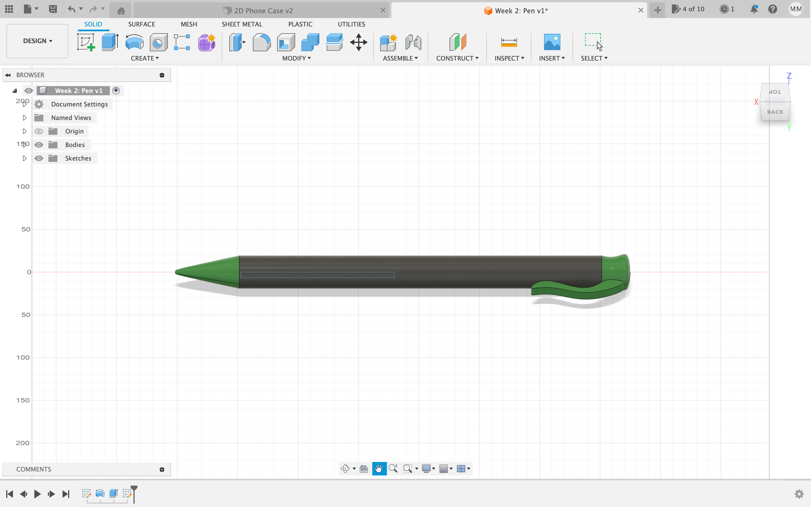
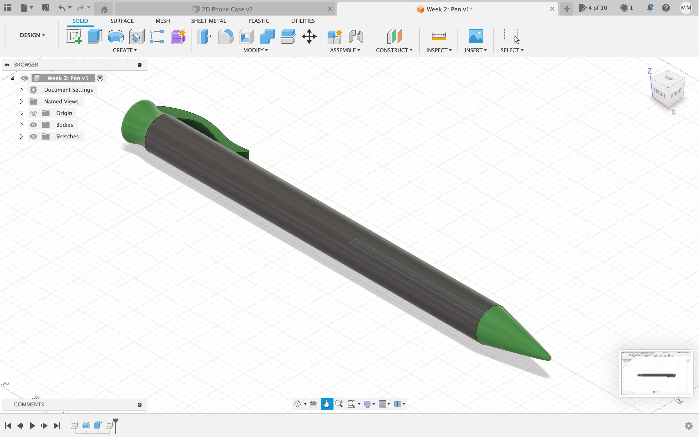
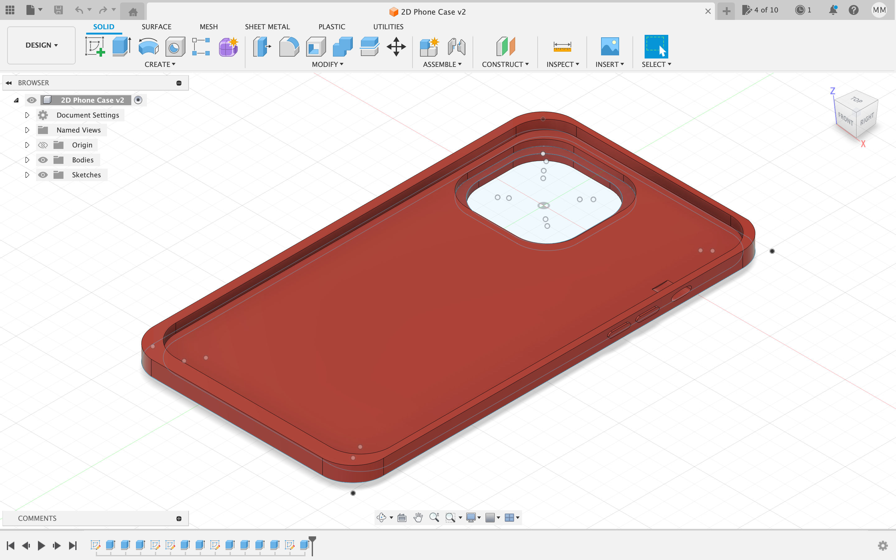

<br>
### Week 2: 2D Design & Cutting
<p>This week we learned about 2D Laser Cutting and Printing. The first step was really just figuring out Fusion360 in order to be able to design what I was printing. I had never used Fusion 360 before, so this was definitely the most challenging aspect of the assignment. Getting to know the different features, however, became much more easier through YouTube tutorials and simply exploring the application. By the end of the week I definitely felt much more comfortable.</p>
<br>
##### <strong>Press Fit</strong>
<p>The 2D Laser Cutter was specifically used to create a press-fit construction kit. First, I designed the shape on Fusion 360 (Image 1). I made sure that the thickness was accurate with that of the cardboard and that the wedges would be big enough. I printed out my first pair on Thursday (Image 3), however, I felt like the shape was too big (100 mm) to make anything. During my Friday lab, I was able to make the shape smaller (50 mm) and eventually print 8 of the shapes. After this printing, I was able to successfully fit them together (Images 4 & 5).</p>
<br>
<div class="slideshow-container">
<div class="mySlides fade">
<div class="numbertext">1 / 5</div>
<center><img src="pressfitmodel.png" height="500" width="700"></center>
<div class="text">2D Press Fit Model (Fusion 360)</div>
</div>
<div class="mySlides fade">
<div class="numbertext">2 / 5</div>
<center></center>
<div class="text">2D Cutting Process</div>
</div>
<div class="mySlides fade">
<div class="numbertext">3 / 5</div>
<center><img src="pressfit1.png" height="500" width="50%"></center>
<div class="text">2D Cut (1st Trial)</div>
</div>
<div class="mySlides fade">
<div class="numbertext">4 / 5</div>
<center></center>
<div class="text">Assembled Press Fit Model</div>
</div>
<div class="mySlides fade">
<div class="numbertext">5 / 5</div>
<center><img src="completepress2.png" height="500" width="50%"></center>
<div class="text">Assembled Press-Fit Model</div>
</div>
<!-- Next and previous buttons -->
<a class="prev" onclick="plusSlides(-1)">&#10094;</a>
<a class="next" onclick="plusSlides(1)">&#10095;</a>
</div>
<br>
<div style="text-align:center">
<span class="dot" onclick="currentSlide(1)"></span>
<span class="dot" onclick="currentSlide(2)"></span>
<span class="dot" onclick="currentSlide(3)"></span>
<span class="dot" onclick="currentSlide(4)"></span>
<span class="dot" onclick="currentSlide(5)"></span>
</div>
<br>
##### <strong>Using Fusion 360</strong>
<p>The real challenge of the week was using Fusion 360. The second half of my assignment was to model two household items and model them in Fusion 360.</p>
###### <strong>Green Pen</strong>
<p>The first item I modeled was my green pen. I first made the 2D structure of the base of the pen with the tip and the barrel. From there I was able to revolve this around the y axis and therefore, make the structure 3D. Eventually, to make the item seem more like a pen, I added the clip and extruded it out to one side. Finally, I ended the structure my adjusting the appearance (colors) in order to make the model look more like my favorite pen.</p>
<br>
<div class="row">
<div class="column">
<center></center>
</div>
<div class="column">
<center></center>
</div>
</div>
<br>
###### <strong>Red iPhone Case</strong>
<p>The second item I modeled was my red iPhone case. I first started off by making the overall rectangle shapes of the case, the border of the case, and the camera hole. Later I used the <q>Fillet</q> feature to round out the edges of the rectangles. I then finished the sketch and began the extruding. I extruded the border of the case in to create the opening on the inside for the phone itself. I furthered this by extruding the camera hole border out to further replicate my own case. I eventually ended this case with a few finishing touches such as the buttons and the hole for the ringer, which I was able to do so by, again, extruding. I added the red appearance and my case was complete.</p>
<br>
<div class="row">
<div class="column">
<center></center>
</div>
<div class="column">
<center><img src="phonemodel2.png" style="width:100%" style="height:200%"></center>
</div>
</div>
<br>
<p>Overall, the biggest assignment of the week was simply just getting used to and figuring out how to use Fusion 360. However, after the press fit and modeling of two household items, I definitely feel much more comfortable!</p>
[Home](../index.html).